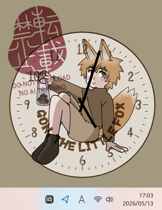

t0-ma作・伺か特設コンテンツ : うかくろっくシェル「ごんどけい」

伺か用のゴースト「うかくろっく」のシェルです。
「ごん狐」のごんの擬人化です。※「ごん狐」はパブリックドメインです
シェルのテンプレートをそのまま使用しているため、必要に応じてシェルの倍率を変更してください。
使用テンプレート: サンプルのアナログ時計

伺か用のゴースト「うかくろっく」のシェルです。
「ごん狐」のごんの擬人化です。※「ごん狐」はパブリックドメインです
シェルのテンプレートをそのまま使用しているため、必要に応じてシェルの倍率を変更してください。
使用テンプレート: サンプルのアナログ時計